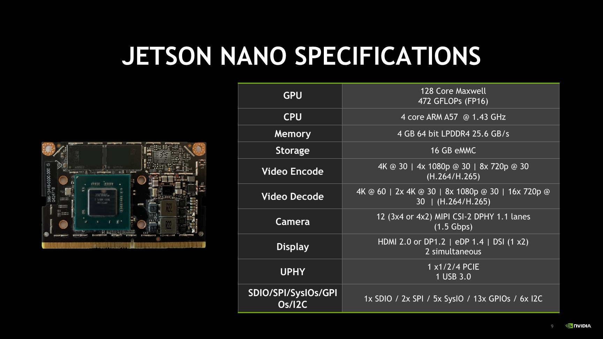
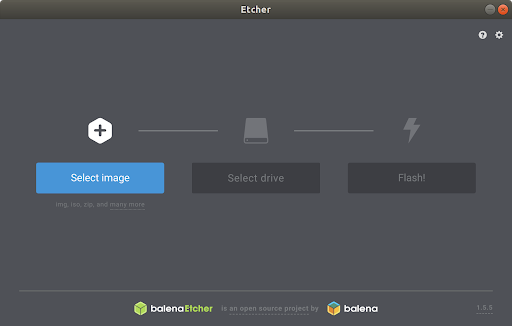
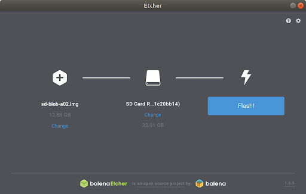
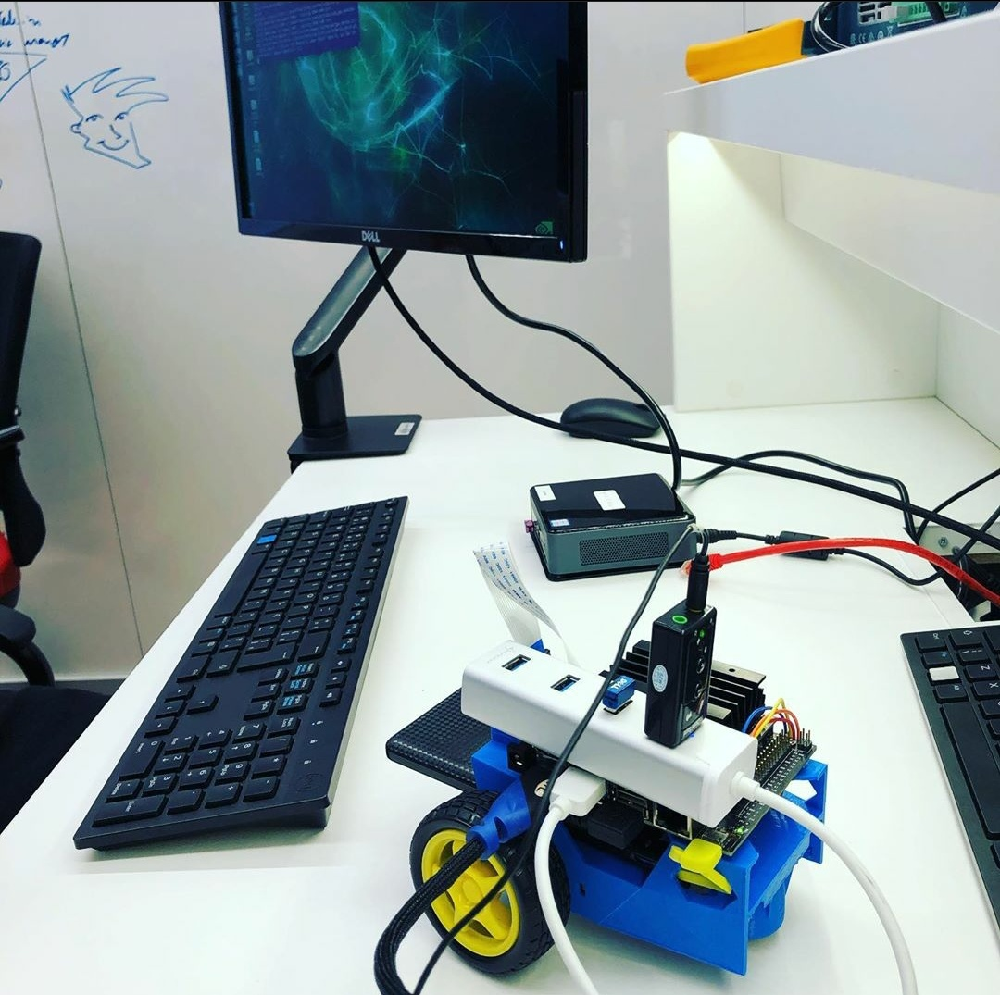

TensorFlow¶
- Aluno: Gabriel Moreira
- Curso: Engenharia da Computação
- Semestre: 9
- Contato:
- Link tutorial oficial: https://github.com/gabsmoreira/speech_recognition
- Ano: 2019
Hardware utilizado no tutorial
- Jetson Nano
- JetBot
O objetivo do tutorial é implementar um simples sistema de reconhecimento de comandos por voz com alguns ajustes em uma placa da NVIDIA Jetson Nano. Tal placa possui uma GPU incluida, o que a torna ideal para executar programas que fazem uso de redes neurais.

Configurando Jetson Nano¶
ISO¶
Antes de tudo, precisamos preparar a placa Jetson Nano para a prototipação. Para isso, é necessário fazer o download da imagem do sistema operacional oferecido pela própria NVIDIA.
Faça o download da imagem nesse link: https://developer.nvidia.com/jetson-nano-sd-card-image-r3223
Em seguida, faça o download do programa que escreve a imagem no cartão SD, chamado Etcher. Isso facilitará muito o desenvolvimento.
Link do Etcher: https://www.balena.io/etcher
Instale o Etcher e execute-o. A seguinte tela irá aparecer.

Selecione a imagem e o disco corretamente e clique em Flash!

Isso pode levar de 10-15 minutos para ser feito. Vá tomar um café! ☕
Assim que o processo for concluído, remova o cartão do computador e coloque na placa.
Conectar o hardware¶
Antes de tudo, conecte a placa Jetson em um monitor usando a saída HDMI. Conecte também o mouse, teclado e o cabo Ethernet.
Está na hora de completar os passos para a configuração do sistema operacional. Isso requer a escolha de um usuário, senha e mais algumas configurações que não são relevantes para o projeto.
Conecte agora o microfone na placa usando um adaptador USB. Para verificar se o microfone foi devidamente reconhecido pelo sistema operacional execute o comando dmesg.
$ sudo dmesg | tail -n10
Atualizando e instalando dependências¶
No linux da Jetson Nano, executar:
Update de libs e packages:
$ sudo apt update
$ sudo apt upgrade
Instalar Pip3:
$ sudo apt install python3-pip
$ sudo pip3 install -U pip
- Instalar dependências do TensorFlow:
$ sudo apt install libhdf5-serial-dev hdf5-tools libhdf5-dev zlib1g-dev zip libjpeg8-dev
$ sudo pip3 install -U numpy==1.16.1 future==0.17.1 mock==3.0.5 h5py==2.9.0 keras_preprocessing==1.0.5 keras_applications==1.0.6 enum34 futures testresources setuptools protobuf
- Instalar Tensorflow:
$ sudo pip3 install --pre --extra-index-url https://developer.download.nvidia.com/compute/redist/jp/v42 tensorflow-gpu
$ sudo pip3 install -U pip
Testando¶
Testar instalação do TensorFlow:
$ python3
>>> import tensorflow as tf
O comando acima deve executar sem nenhum erro se o TensorFlow tiver sido instalado corretamente.
Download do exemplo do TensorFlow¶
O TensorFlow possui um exemplo em seu repositório de utilização de redes neurais para reconhecimento de comandos por voz. Nesse tutorial, utilizaremos esse mesmo exemplo com algumas adaptações, uma vez que o modelo fornecido recebe como input um arquivo de áudio .wav. Nosso objetivo é criar um programa que recebe um stream de áudio que deve ser processado continuamente, assim como é visto em assistentes de voz (Google e Siri).
O primeiro passo é clonar o repositório raiz do TensorFlow.
$ git clone https://github.com/tensorflow/tensorflow.git
Vá até a pasta do exemplo que queremos executar.
$ cd tensorflow/tensorflow/examples/speech_commands/
Note que na pasta existem diversos arquivos, os principais são:
-
train.py: utilizado para treinar o modelo. -
freeze.py: utilizado para compilar o modelo treinado. -
label_wav.py: utilizado para reconhecer um comando, dado um arquivo .wav de input e um modelo previamente treinado
O segundo passo é treinar a rede neural para que fique com uma boa acurácia e consiga processar os nossos comandos de voz. Para isso execute o script train.py com os seguintes parâmetros.
$ python3 train.py
Para que o modelo fique aceitável, é necessário deixar pelo menos 8 horas treinando. Caso você não tenha esse tempo, o link para o modelo treinado (e compilado) está aqui: https://github.com/gabsmoreira/speech_recognition/raw/master/my_frozen_graph.pb
A placa Jetson não foi projetada para treinar redes neurais, o ideal seria fazer isso em um computador mais potente e depois transferir o arquivo contento os pesos da rede neural via SCP.
Com o modelo treinado, agora compile usando o checkpoint que quiser:
$ python3 freeze.py --start_checkpoint=conv.ckpt-12000 --output_file=my_frozen_graph.pb
Agora teste o modelo treinado. Para isso, é necessário ter o path das labels do modelo (que normalmente está localizado no /tmp/speech_commands_train/conv_labels.txt)
$ python3 label_wav.py --graph=my_frozen_graph.pb --labels={PATH DAS LABELS} --wav={PATH DO WAV FILE}
Modificando o script¶
O primeiro passo é criar um pequeno exemplo de captura e processamento de stream de áudio usando o pyaudio.
Antes de criar o novo arquivo, instale a biblioteca acima.
$ pip3 install pyaudio
Crie um arquivo com o nome audio_stream.py e coloque o seguinte código:
from __future__ import absolute_import
from __future__ import division
from __future__ import print_function
import argparse
import sys
import pyaudio
import numpy as np
import audioop
import wave
import tensorflow as tf
import time
FLAGS = None
CHUNK = 4096 # number of data points to read at a time
RATE = 16000 # time resolution of the recording device (Hz)
CHANNELS = 1 # number of channels
FORMAT = pyaudio.paInt16 # audio format from pyaudio
p=pyaudio.PyAudio() # start the PyAudio class
devinfo = p.get_device_info_by_index(0) # get the first recorder device
# stream from pyaudio
stream=p.open(format=FORMAT, channels=CHANNELS, rate=RATE, input=True,
frames_per_buffer=CHUNK)
while True:
# transform data into a numpy array
data = np.fromstring(stream.read(CHUNK), dtype=np.int16)
# get audio rms
rms = audioop.rms(data, 2)
# if audio rms reaches 900 or more set recording for true
# and start appending the data into the frames array.
# this means someone is talking
if rms > 900:
if recording == False:
recording = True
frames.append(data)
else:
if recording == True:
time_from_previous = time.time()
# get data from stream for the next 0.5 seconds
# after the volume
while time.time() - time_from_previous < 0.5:
data = np.fromstring(stream.read(CHUNK),dtype=np.int16)
frames.append(data)
# write frames inside wav file
_file = wave.open("out.wav","wb")
_file.setnchannels(CHANNELS)
_file.setsampwidth(p.get_sample_size(FORMAT))
_file.setframerate(RATE)
_file.writeframes(b''.join(frames))
_file.close()
# clear frames array since the data was
# written inside wav file
frames = []
recording = False
A ideia é criar um stream que comeca a gravar os dados do áudio em uma array assim que o "volume" do áudio passa de 900 (isso pode depender do microfone usado) e para depois de 0.5 segundos assim que o audio volta a ficar com um valor menor que 900. Tal array é escrita em um arquivo .wav constantemente.
Com esse código, transformamos um stream de áudio em diversos .wav que agora podem ser usados no modelo treinado. O que falta então é unir esse código do stream de áudio com a predição do modelo.
Código fonte, python
from __future__ import absolute_import
from __future__ import division
from __future__ import print_function
import argparse
import sys
import pyaudio
import numpy as np
import audioop
import wave
import tensorflow as tf
import time
FLAGS = None
CHUNK = 4096 # number of data points to read at a time
RATE = 16000 # time resolution of the recording device (Hz)
CHANNELS = 1 # number of channels
FORMAT = pyaudio.paInt16 # audio format from pyaudio
p=pyaudio.PyAudio() # start the PyAudio class
devinfo = p.get_device_info_by_index(0) # get the first recorder device
# stream from pyaudio
stream=p.open(format=FORMAT, channels=CHANNELS, rate=RATE, input=True,
frames_per_buffer=CHUNK)
def load_graph(filename):
"""Unpersists graph from file as default graph."""
with tf.io.gfile.GFile(filename, 'rb') as f:
graph_def = tf.compat.v1.GraphDef()
graph_def.ParseFromString(f.read())
tf.import_graph_def(graph_def, name='')
def load_labels(filename):
"""Read in labels, one label per line."""
return [line.rstrip() for line in tf.io.gfile.GFile(filename)]
def run_graph(wav_data, labels, input_layer_name, output_layer_name,
num_top_predictions):
"""Runs the audio data through the graph and prints predictions."""
with tf.compat.v1.Session() as sess:
# Feed the audio data as input to the graph.
# predictions will contain a two-dimensional array, where one
# dimension represents the input image count, and the other has
# predictions per class
softmax_tensor = sess.graph.get_tensor_by_name(output_layer_name)
predictions, = sess.run(softmax_tensor, {input_layer_name: wav_data})
# Sort to show labels in order of confidence
top_k = predictions.argsort()[-num_top_predictions:][::-1]
for node_id in top_k:
human_string = labels[node_id]
score = predictions[node_id]
print('%s (score = %.5f)' % (human_string, score))
return 0
def label_wav(wav, labels, graph, input_name, output_name, how_many_labels):
"""Loads the model and labels, and runs the inference to print predictions."""
if not wav or not tf.io.gfile.exists(wav):
tf.compat.v1.logging.fatal('Audio file does not exist %s', wav)
if not labels or not tf.io.gfile.exists(labels):
tf.compat.v1.logging.fatal('Labels file does not exist %s', labels)
if not graph or not tf.io.gfile.exists(graph):
tf.compat.v1.logging.fatal('Graph file does not exist %s', graph)
labels_list = load_labels(labels)
# load graph, which is stored in the default session
load_graph(graph)
with open(wav, 'rb') as wav_file:
wav_data = wav_file.read()
run_graph(wav_data, labels_list, input_name, output_name, how_many_labels)
def prepare(graph, labels):
"""Loads data labels and tensor graphs"""
labels_list = load_labels(labels)
load_graph(graph)
return labels_list
def main(_):
# initialize variables and prepare graph
labels = prepare(FLAGS.graph, FLAGS.labels)
recording = False
frames = []
time_from_previous = 0
with tf.compat.v1.Session() as sess:
# loads softmax tensor
softmax_tensor = sess.graph.get_tensor_by_name(FLAGS.output_name)
while True:
# transform data into a numpy array
data = np.fromstring(stream.read(CHUNK), dtype=np.int16)
# get audio rms
rms = audioop.rms(data, 2)
# if audio rms reaches 900 or more set recording for true
# and start appending the data into the frames array.
# this means someone is talking
if rms > 900:
if recording == False:
recording = True
frames.append(data)
else:
if recording == True:
time_from_previous = time.time()
# get data from stream for the next 0.5 seconds
# after the volume
while time.time() - time_from_previous < 0.5:
data = np.fromstring(stream.read(CHUNK),dtype=np.int16)
frames.append(data)
# write frames inside wav file
_file = wave.open("out.wav","wb")
_file.setnchannels(CHANNELS)
_file.setsampwidth(p.get_sample_size(FORMAT))
_file.setframerate(RATE)
_file.writeframes(b''.join(frames))
_file.close()
# clear frames array since the data was
# written inside wav file
frames = []
# read wav file to get the input data for
# our neural network
with open('out.wav', 'rb') as wav_file:
wav_data = wav_file.read()
# this is where the model predicts based on the input data
predictions, = sess.run(softmax_tensor, {FLAGS.input_name: wav_data})
# Sort to show labels in order of confidence
top_k = predictions.argsort()[-FLAGS.how_many_labels:][::-1]
for node_id in top_k:
human_string = labels[node_id]
score = predictions[node_id]
print('%s (score = %.5f)' % (human_string, score))
recording = False
if __name__ == '__main__':
parser = argparse.ArgumentParser()
parser.add_argument(
'--wav', type=str, default='', help='Audio file to be identified.')
parser.add_argument(
'--graph', type=str, default='', help='Model to use for identification.')
parser.add_argument(
'--labels', type=str, default='', help='Path to file containing labels.')
parser.add_argument(
'--input_name',
type=str,
default='wav_data:0',
help='Name of WAVE data input node in model.')
parser.add_argument(
'--output_name',
type=str,
default='labels_softmax:0',
help='Name of node outputting a prediction in the model.')
parser.add_argument(
'--how_many_labels',
type=int,
default=1,
help='Number of results to show.')
FLAGS, unparsed = parser.parse_known_args()
tf.compat.v1.app.run(main=main, argv=[sys.argv[0]] + unparsed)
Agora para testar o script, basta executar o arquivo python.
$ python3 audio_stream.py
Veja o vídeo da demonstração
Extra - controle do JetBot por comando de voz¶
Para fazer essa parte do tutorial, é necessário ter o mesmo material/recursos propostos no link do JetBot.
Link do tutorial do JetBot: https://github.com/NVIDIA-AI-IOT/jetbot/wiki/bill-of-materials
Para montar a parte de hardware, basta seguir esse tutorial: https://github.com/NVIDIA-AI-IOT/jetbot/wiki/Hardware-Setup
A parte de software já temos, basta instalar só mais alguns pacotes.
Intalar bibliotecas adicionais¶
$ cd
$ wget https://nvidia.box.com/shared/static/phqe92v26cbhqjohwtvxorrwnmrnfx1o.whl -O torch-1.3.0-cp36-cp36m-linux_aarch64.whl
$ pip3 install numpy torch-1.3.0-cp36-cp36m-linux_aarch64.whl
$ pip3 install traitlets
Instalar biblioteca do JetBot¶
$ git clone https://github.com/NVIDIA-AI-IOT/jetbot
$ cd jetbot
$ sudo python3 setup.py install
Basta instanciar um objeto robot antes de todo o script, lembrando sempre de importar a biblioteca do JetBot.
Eu também optei por fazer um dicionário de ações possíveis do robô, para ser mais econômico nos "ifs".
from jetbot import Robot
robot = Robot()
function_chooser = {'left': robot.left, 'right': robot.right, 'go': robot.forward, 'down': robot.backward}
for node_id in top_k:
human_string = labels[node_id]
score = predictions[node_id]
if human_string in ['left', 'right', 'go', 'down']:
# run robot action
function_chooser[human_string](velocity=0.3)
time.sleep(0.5)
robot.stop()
O código inteiro do movimento do robô está no arquivo chamado robot_control.py
A foto da montagem final ficou assim:

Veja o vídeo da demonstração: